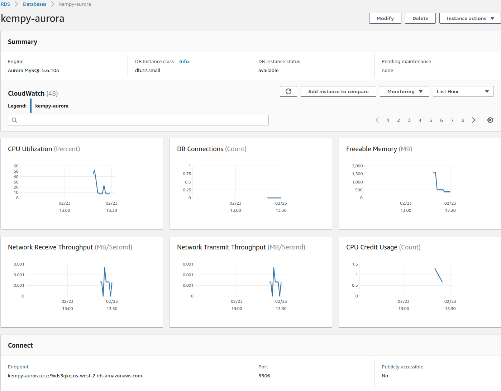

AWS MySQL Migrate
Contents
Introduction
When OIT provision an account in AWS, we create a Main VPC (virtual private cloud) divided into a number of subnets. We categorize those subnets as follows:
- Public - resources placed in these subnets are accessible from the Internet.
- Private - resources placed in these subnets have Internet access via NAT (network address translation) but are not visible from the Internet.
- Data - resources placed in these subnets have no access to or from the Internet.
More than one subnet is created in each category, and are placed in different availability zones (AZs). An Availability Zone is an AWS data center (or group of data centers) that is geographically isolated from other AZs in a Region.
We recommend when placing a Database in AWS that you place it in the Data subnets for security purposes. Because these subnets have no direct Internet access, you will need to set a way to access them to import and export data.
Glossary
RDS
Amazon Relational Database Service (Amazon RDS) makes it easy to set up, operate, and scale a relational database in the cloud. It provides cost-efficient and resizable capacity while automating time-consuming administration tasks such as hardware provisioning, database setup, patching and backups. It frees you to focus on your applications so you can give them the fast performance, high availability, security and compatibility they need. [https://aws.amazon.com/rds/]
EC2
Amazon Elastic Compute Cloud (Amazon EC2) is a web service that provides secure, resizable compute capacity in the cloud. [https://aws.amazon.com/ec2/]
Step 1. Create Security Groups in the Main VPC
In order for traffic to reach our resources, we need to create two security groups. ( We are placing our resources in the Main VPC; make sure when creating your Security Groups they are also created in the Main VPC)
- Create a Security Group with port 22 [SSH] access from BYU and port 80 [HTTP] access from anywhere.
- Create a Self Referencing Security Group with port 3306 [MYSQL/Aurora].
Security Group inbound rules can be thought of as 1) WHAT are we giving access to, and 2) WHO are we giving that access to.
We will add the Self Referencing group to our DB Instance because it has the WHAT.
We will add it to our EC2 instance to make it the WHO.
Step 2. Create a Aurora MySQL RDS Database
- Create an Aurora MySQL DB
- Create a replica in a different AZ; name the DB Instance and create a master username and password.
- Place our DB Instance in the Main VPC in the main-db-subnet-group. Attach the Self Referencing Security Group.
- Once the instance is created, take note of the instance end-point. [kempy-aurora.crzc9xds3qkq.us-west-2.rds.amazonaws.com]

Step 3. Create an EC2 Instance
Create an EC2 Instance. There are many AMIs (Amazon Machine Instances) to choose from; I selected an Ubuntu Image.
- Launch an EC2 Instance [Ubuntu Server 18.04 LTS (HVM), SSD Volume Type - ami-0bbe6b35405ecebdb (64-bit x86) / ami-0db180c518750ee4f (64-bit Arm)]
- Add it to a Public Subnet in the Main VPC
- Add the Security Group we created earlier - we'll also need to attach the 2nd security group (the self referencing one) but can only attach one when we create the instance.
- Once the instance is created, we attach the Self Referencing Security Group
Step 4. Configure the EC2 Instance
This is our gateway to our Database. We will install PHPMyAdmin as a GUI tool to view our database - this is something we would want to restrict access to in a production environment.
- Update the instance and install the required software - LAMP + PHPMyAdmin
sudo apt-get -y update
sudo apt-get -y upgrade
sudo reboot
sudo apt-get -y install lamp-server^
sudo service apache2 status
sudo apt-get -y install phpmyadmin
# Select apache2 and No Default Database
sudo vim /etc/apache2/apache2.conf
# Add the following lines to the bottom of the file
# Include web access to phpmyadmin
Include /etc/phpmyadmin/apache.conf
sudo service apache2 restart
sudo vim /etc/phpmyadmin/config.inc.php
# Add the following lines to the bottom of the file
$i++;
$cfg['Servers'][$i]['host'] = 'kempy-aurora.crzc9xds3qkq.us-west-2.rds.amazonaws.com';
$cfg['Servers'][$i]['port'] = '3306';
$cfg['Servers'][$i]['verbose'] = 'kempy-aurora';
$cfg['Servers'][$i]['connect_type'] = 'tcp';
$cfg['Servers'][$i]['extension'] = 'mysql';
$cfg['Servers'][$i]['compress'] = TRUE;
- Browse to http://54.188.1.202/phpmyadmin/
- Create Database - this could be done with PHPMyAdmin.

mysql -h kempy-aurora.crzc9xds3qkq.us-west-2.rds.amazonaws.com -u iamgroot -p
CREATE DATABASE classicmodels;
CREATE USER 'newdbuser'@'%';
SET PASSWORD FOR 'newdbuser'@'%'=PASSWORD("GandUnkedrumpQuabledVorgeBasCome");
GRANT ALL PRIVILEGES ON classicmodels.* TO 'newdbuser'@'%' IDENTIFIED BY 'GandUnkedrumpQuabledVorgeBasCome';
- Upload our backed up database file to the EC2 instance and restore it into the database
#scp -i key.pem localSQLfile.sql ecsserver:/path
scp -i aardvark-kempy-oregon-key.pem mysqlsampledatabase.sql ubuntu@54.188.1.202:/home/ubuntu
mysql -h kempy-aurora.crzc9xds3qkq.us-west-2.rds.amazonaws.com\
-unewdbuser -p classicmodels < mysqlsampledatabase.sql
- Check the database in PHPMyAdmin - http://54.188.1.202/phpmyadmin/
{kind=link}
{kind=link}
{kind=link}
{kind=link}
{kind=link}
{kind=link}
{kind=link}
{kind=link}
{kind=link}
{kind=link}
{kind=link}
{kind=link}
{kind=link}